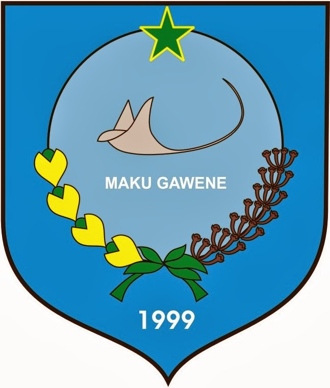

Tentang
Kota Ternate
Kota Ternate adalah sebuah kota yang berada di bawah kaki gunung api Gamalama pada sebuah Pulau Ternate di Provinsi Maluku Utara, Indonesia. Ternate merupakan Ibukota sementara Provinsi Maluku Utara secara de facto dari tahun 1999 hingga 2010. Pada tanggal 4 Agustus 2010, Sofifi diresmikan menjadi ibu kota pengganti Ternate.
Dari sektor pariwisata, kota Ternate dikenal sangat banyak memiliki obyek menarik untuk dikunjungi. Sejarah perjalanan Ternate adalah salah satu sebab banyaknya obyek ini. Sebut saja benteng-benteng seperti Tolukko, Kastela, atau Oranye yang berada di tengah kota menjadi saksi sejarah perjalanan Ternate. Selain itu wisata bernuansa alam seperti Danau Tolire atau Pantai Sulamadaha juga menjadi pilihan menarik dan indah untuk dikunjungi. Satu yang menarik terkait keberadaan Gunung Gamalama adalah obyek wisata Batu Angus yang merupakan situs batuan lahar dari sisa letusan Gunung Gamalama. Sekilas situs ini menyerupai candi-candi di Jawa, namun sebenarnya yang akan kita lihat adalah lahar panas yang telah membatu dan membentuk kontur unik.
Namun Sayangnya masih banyak sekali tempat – tempat parawisata yang belum terekspos di kalangan masyawakat luas, salah satunya Objek Wisata Alam Batu Kurubu ini.